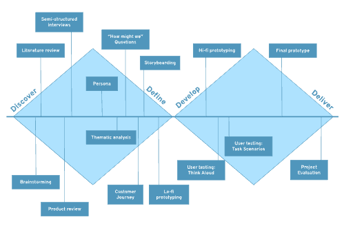

The Process
The work behind Mate Rate has been following the Double Diamond Design and Goal-directed design, to make sure to deliver the perfect social-food community platform of reviews! The process can be summarized using 4 phases.
Discover
The discover phase started kicked-off our project helping us to understand, rather than assuming, a problem that needs to be targeted. Several sessions of brainstorming were conducted to decide on the initial idea which we named “Friend’s tips for restaurants/bars/hotels”. This was then followed by gathering of knowledge and facts as we dug deep into previous research and learned about the history and critique of online reviews, along the impact of social media communities? This all led up to a broader problem statement ready to be further analyzed. To get to know the people affected by the problematic issue, we started to gather initial insights through semi-structured interviews and product reviews of similar applications. Through all data collection, we could now move on to further analysis and definitions.
Define
Data from the discovery phase was analyzed using a thematic analysis, to translate insights, knowledge and facts into more concrete requirements and definitions. We created personas to guide the analysis and really illustrate our targeting group. Through analysis, we were able to narrow down, define and concretize our ideas, which was summarized through user pain-points, user needs and user goals. As we now began to understand more of the context of the problem, we were ready to start creating a more concrete concept. A customer journey mapping and storyboarding was done to lay out further requirements, design principles and frameworks to be used.
Develop
Based on the layout and definition from the previous phase, we created a hi-fi prototype in Figma to display the actual application and effectively communicate and explain our idea, concept and user flow. After the prototype building, we moved on to evaluation of our prototype. We gathered potential users, half of them in a focus group and half of them individually, to perform usability testing. We encourage users to verbally express their thoughts and ideas through Think Aloud usability testing along with providing them with Tasked Based Scenarios to really understand the needed improvement for our design and application. After the different features and functionalities were tested, we gained valuable insights on adjustments, to really create a product aligning with user goals and directing our problem statement.
Deliver
To wrap up our project, we entered the delivery phase after grouping
and categorizing our findings for our prototype evaluation. We
thereby began our second iteration of our hi-fi prototype, creating
changes based on key takeaways from the previous phase. To finalize
the project we built a demo version of the app using React Native,
Google’s API for Maps and Firebase. After some final adjustments
were made, we could display our final delivery.
Reflecting on our project and progress has been an
important last step, in order to improve until next time. A mistake
is only a mistake if you don't learn from it, so that’s why we went
through our project and chose methods to learn and reflect.